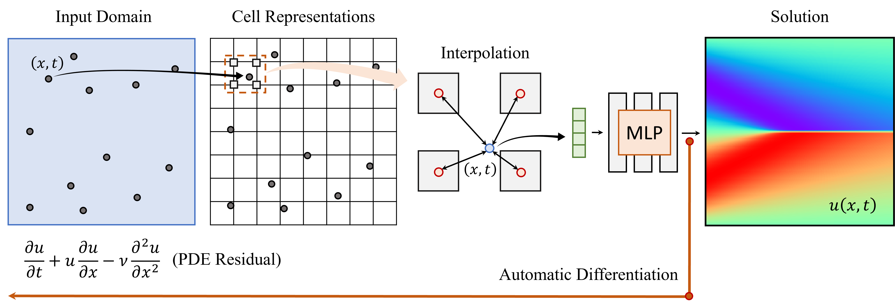
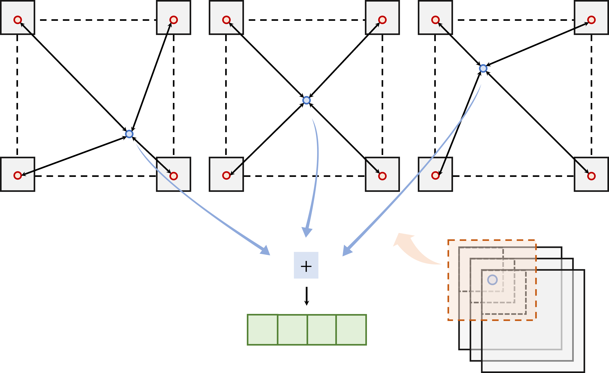

Sungkyunkwan University
PIXEL achieved high accuracy to predict 3D Helmholtz Eq which has the high-frequency components
With the increases in computational power and advances in machine learning, data-driven learning-based methods have gained significant attention in solving PDEs. Physics-informed neural networks (PINNs) have recently emerged and succeeded in various forward and inverse PDEs problems thanks to their excellent properties, such as flexibility, mesh-free solutions, and unsupervised training. However, their slower convergence speed and relatively inaccurate solutions often limit their broader applicability in many science and engineering domains. This paper proposes a new kind of data-driven PDEs solver, physics-informed cell representations (PIXEL), elegantly combining classical numerical methods and learning-based approaches. We adopt a grid structure from the numerical methods to improve accuracy and convergence speed and overcome the spectral bias presented in PINNs. Moreover, the proposed method enjoys the same benefits in PINNs, e.g., using the same optimization frameworks to solve both forward and inverse PDE problems and readily enforcing PDE constraints with modern automatic differentiation techniques. We provide experimental results on various challenging PDEs that the original PINNs have struggled with and show that PIXEL achieves fast convergence speed and high accuracy.
We stack up multiple coarse-grained grid representations and the representations at each collocation point computed by summing up the representations from all grids. With this method, we can inject a smooth prior and avoid overfitting. A multigrid representation is defined as four dimensional tensors in two dimensional grids (M, c, H, W). c is the size of the channel which is the input dimension of the MLP, and H and W are spatial and temporal grid sizes. We have M grids, and each grid is shifted in such a way that an input coordinate can be located in different locations in each grid. In this way, we can increase the effective grid size by a factor of M, meaning the model's expressive power will also increase. Without shifting each grid, an input coordinate lies on identical location in every grid, and each grid would represent similar values resulting in not increasing the expressive power.
We are thankful to Junwoo Cho for helpful discussion and contributions. This research was supported by the Ministry of Science and ICT (MSIT) of Korea, under the National Research Foundation (NRF) grant (2022R1F1A1064184, 2022R1A4A3033571), Institute of Information and Communication Technology Planning Evaluation (IITP) grants for the AI Graduate School program (IITP-2019-0-00421). The research of Seok-Bae Yun was supported by Samsung Science and Technology Foundation under Project Number SSTF-BA1801-02.
This website borrowed a template of Michaël Gharbi and Plenoxels.